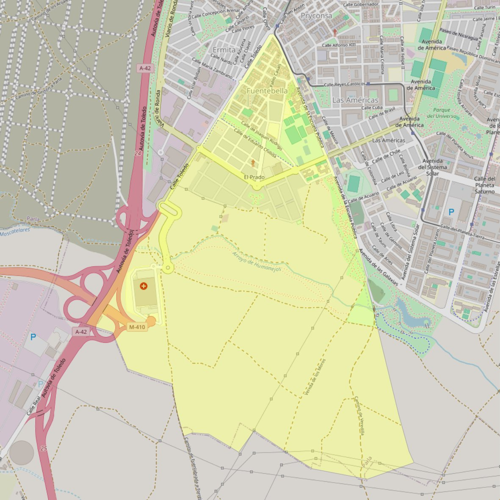

San Bernardo

- Arciprestazgo
- Parla
- Población
- Parla
- Dirección postal
- c/ Mariano Benlliure, 2
- Código postal
- 28981
- Extensión
- 3,56 km² (356 ha)
- Teléfono
- 916 991 778
- Correo electrónico
- despacho@parroquiasanbernardo.es
Arciprestazgos y parroquias de la Diócesis de Getafe
